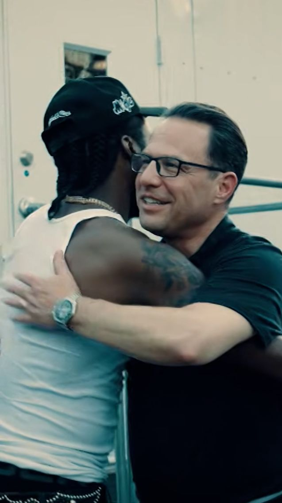

Josh Shapiro Appears Alongside Meek Mill in New Philly Music Video
Music News
Published: Tuesday, August 12, 2026

Pennsylvania Gov. Josh Shapiro is making an unexpected appearance in Meek Mill's latest music video, connecting the state's top elected official with one of Philadelphia's most recognizable hip-hop artists.
Shapiro briefly appears in the video for "Nightmares to Dreams," sharing a moment with Meek as the two talk and embrace. The scene was recorded ahead of Meek's July 4 performance at the One Philly: Unity Concert for America, according to state officials.
The video also features Philadelphia Mayor Cherelle Parker and "Million Dollaz Worth of Game" hosts Wallo267 and Gillie da King, giving the project a strong Philadelphia focus.
Shapiro and Meek's connection goes beyond music. The two have spent years discussing criminal justice issues, particularly the impact of probation policies.
Meek's own experience with the justice system began with a 2008 conviction on gun and drug charges. Years later, a probation violation resulted in a prison sentence that drew widespread public attention and helped launch the #FreeMeekMill campaign.
His experience eventually became part of a broader effort to change probation and parole practices nationwide. Meek later helped establish the REFORM Alliance alongside Jay-Z and Michael Rubin.
The rapper and Shapiro continued their work on criminal justice reform after Shapiro became governor. In 2023, the two appeared together in Philadelphia as Shapiro promoted legislation aimed at changing probation rules and expanding clean-slate protections.
Meek was also pardoned that year by former Pennsylvania Gov. Tom Wolf.
Shapiro has previously said that getting to know Meek personally helped him better understand the experiences and perspectives behind the rapper's music.
For Meek, the new video is centered on his journey from North Philadelphia, overcoming difficult circumstances and turning his success into an opportunity to help others.
The appearance also highlights the governor's continued connection to Philadelphia-area culture as he seeks another term in office.